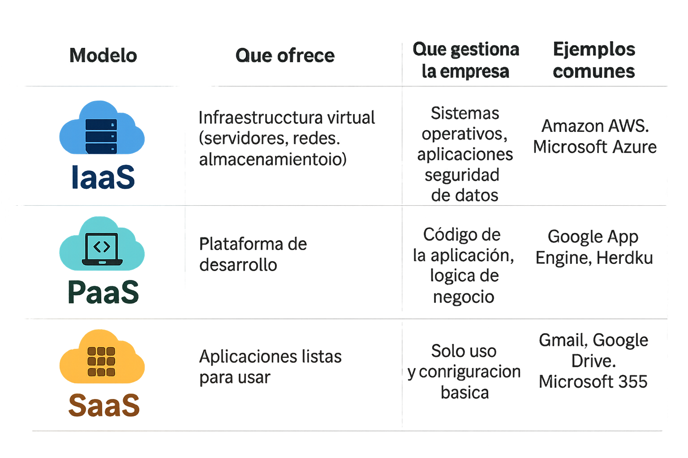

Selecció de serveis i tipus de núvol
Quan una pime es planteja treballar al núvol, és important conèixer quins tipus de cloud existeixen i quins serveis es poden contractar. No totes les solucions són iguals: unes donen més control, d’altres més flexibilitat o estalvi de costos. Ho veurem pas a pas.
Abans de decidir quin núvol contractar, hem de saber qui és el responsable de la infraestructura i com s’organitza. Això afecta directament la seguretat de les dades, el nivell de personalització i el cost de manteniment. Les opcions més habituals són: núvol públic, privat, híbrid o multinúvol.
Núvol públic
És l’opció més comuna per començar. Al núvol públic, els recursos (servidors, espai d’emmagatzematge, programes) són propietat d’un proveïdor extern (com Google, Amazon o Microsoft). Això vol dir que compartim infraestructura amb altres usuaris, però la podem fer servir en qualsevol moment i pagar només pel que necessitem. És flexible, escalable i no requereix que instal·lem res a la nostra empresa.
Núvol privat
Al núvol privat, la infraestructura és només per a la nostra empresa. Es pot allotjar a les nostres pròpies instal·lacions o en un centre de dades extern, però sempre estarà dedicada a nosaltres. Això ofereix més seguretat i control sobre les dades, tot i que sol requerir una inversió més gran en tecnologia i manteniment.
Núvol híbrid
El núvol híbrid combina el millor dels dos anteriors: una part de les dades es guarda al núvol públic (per exemple, per a tasques generals) i una altra part es manté al núvol privat (per a informació més sensible). Aquest model és molt útil per a pimes perquè permet adaptar-se a diferents necessitats sense renunciar a la seguretat.
Multinúvol
El multinúvol vol dir que una empresa utilitza diversos núvols públics de diferents proveïdors alhora. Així no depenem d’un únic proveïdor i podem triar el millor de cadascun. Per exemple, una empresa pot fer servir Google Cloud per a l’emmagatzematge i Microsoft Azure per a altres aplicacions.
A més de saber qui gestiona el núvol, necessitem entendre quin servei ens donarà el proveïdor. No és el mateix llogar només recursos bàsics (servidors i xarxes) que disposar d’una plataforma per crear aplicacions o tenir programes a punt per utilitzar directament en línia. Per això parlem de tres models principals: IaaS, PaaS i SaaS, cadascun pensat per a necessitats diferents.

IaaS (Infraestructura com a Servei)
En aquest cas, lloguem recursos bàsics com servidors, xarxes o espai d’emmagatzematge. Nosaltres ens encarreguem d’instal·lar i gestionar els programes que necessitem. És com llogar un edifici buit i decidir què hi posem dins. Exemple: contractar un servidor virtual per allotjar la pàgina web de l’empresa.
PaaS (Plataforma com a Servei)
Aquí, a més de la infraestructura, el proveïdor ens dona eines per desenvolupar i gestionar les nostres pròpies aplicacions. Així podem crear programes a mida sense preocupar-nos de la part tècnica del maquinari. És molt útil per a empreses que necessiten programari adaptat.
SaaS (Programari com a Servei)
Aquest és el model més comú per a pimes, perquè és el més senzill. Utilitzem programes i aplicacions directament des d’internet: no cal instal·lar-los ni actualitzar-los, tot es fa en línia. Paguem per ús i tenim accés des de qualsevol lloc.
Exemple: fer servir Gmail, Google Drive, Office 365, Dropbox o programes de facturació en línia.
En aquesta activitat treballarem en grups per investigar, comparar i reflexionar sobre diferents opcions de proveïdors cloud. L’objectiu és que aprenguem a analitzar, de forma crítica, quines característiques ofereix cada proveïdor i puguem valorar quin s’adapta millor a les necessitats reals d’una pime del nostre sector. Per a això, triarem dos proveïdors cloud que ens resultin interessants: poden ser grans proveïdors internacionals com Google Cloud, Amazon Web Services (AWS) o Microsoft Azure, o podem incloure alguna opció local o regional si en coneixem alguna que sigui rellevant per al nostre context.
Un cop triats els proveïdors, construirem junts una taula comparativa senzilla, però completa, que ens permeti identificar similituds i diferències. En aquesta taula inclourem com a mínim els aspectes següents:
- Preus aproximats o rangs de cost: indicarem com funciona el seu model de pagament (per ús, subscripció mensual, plans escalables, etc.).
- Seguretat i privacitat: revisarem quines garanties de seguretat ofereix cada proveïdor (xifratge de dades, centres de dades certificats, còpies de seguretat automàtiques, compliment de normativa de protecció de dades).
- Escalabilitat i flexibilitat: valorarem si és fàcil ampliar o reduir recursos segons les necessitats de l’empresa, i si ofereix opcions per combinar serveis (IaaS, PaaS, SaaS).
- Facilitat d’ús i suport tècnic: indicarem si ofereixen suport en el nostre idioma, formació per a usuaris o assistència 24/7.
- Exemples d’ús en pimes del nostre sector: buscarem almenys un exemple o cas pràctic real (o hipotètic) de com una pime podria aprofitar els serveis d’aquest proveïdor.
A mesura que anem buscant la informació, discutirem en grup quins avantatges i limitacions veiem en cada opció i com encaixaria cada proveïdor en el context d’una pime com la nostra. Quan completem la taula, redactarem una petita conclusió conjunta en què explicarem quin proveïdor creiem que s’ajusta millor a les nostres necessitats i per què, justificant la nostra elecció de forma raonada.
Per acabar, compartirem les nostres comparatives i conclusions amb la resta de la classe. Això ens permetrà conèixer altres perspectives, descobrir proveïdors que potser no coneixíem i debatre quins criteris són realment prioritaris a l’hora de prendre una decisió.
Per ajudar-nos a completar aquesta activitat pas a pas, hem preparat la fitxa Comparativa Cloud de treball. La podem descarregar en format editable i en pdf.
Per últim, guardarem la taula comparativa a la nostra carpeta d’aprenentatge (LOG) amb extensió .OC perquè quedi com a evidència de la nostra anàlisi dins del nostre pla de formació i transformació digital.